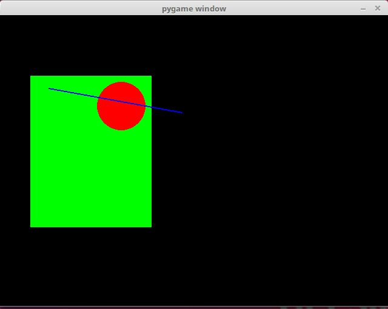
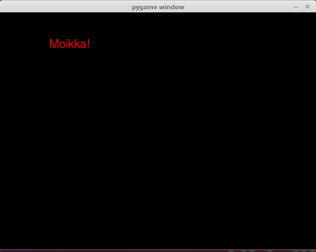

Your programs will look more professional if instead of “pygame window” the window title contains the actual name of the program.The title is set with the pygame.display.set_caption function:
pygame.display.set_caption("Great Adventure")
The following program draws a rectangle, a circle and a line on the screen:
import pygame
pygame.init()
display = pygame.display.set_mode((640, 480))
display.fill((0, 0, 0))
pygame.draw.rect(display, (0, 255, 0), (50, 100, 200, 250))
pygame.draw.circle(display, (255, 0, 0), (200, 150), 40)
pygame.draw.line(display, (0, 0, 255), (80, 120), (300, 160), 2)
pygame.display.flip()
while True:
for event in pygame.event.get():
if event.type == pygame.QUIT:
exit()
Running the above code should look like this:

Text in pygame is drawn in two steps: first we create an image containing the desired text, and then this image is drawn on the screen. It works like this:
import pygame
pygame.init()
display = pygame.display.set_mode((640, 480))
display.fill((0, 0, 0))
game_font = pygame.font.SysFont("Arial", 24)
text = game_font.render("Moikka!", True, (255, 0, 0))
display.blit(text, (100, 50))
pygame.display.flip()
while True:
for event in pygame.event.get():
if event.type == pygame.QUIT:
exit()
Running the above code should look like this:

Here the method pygame.font.SysFont creates a font object, which uses the system font Arial in size 24. The the method render creates an image of the specified text in the given colour. This image is drawn on the window with the blit method, just as before.
NB: different systems will have different fonts available. If the system this program is exeuted on doesn’t have the Arial font, even though Arial is a very common font available on most systems, the default system font is used instead. If you need to have a specific font available for your game, you can include the font file in the game directory and specify its location for the pygame.font.Font method.
Here are some more advanced exercises for practicing what you have learned in this part of the course material.
Please respond to a quick questionnaire on this part of the course.